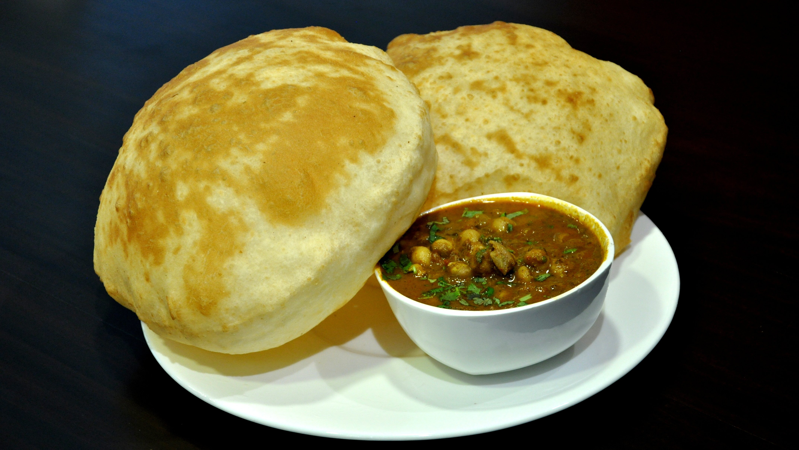

Chhole Bhature

Chole bhature is a popular Punjabi dish of chickpeas (chana) in a spicy gravy (chole) served with fluffy, fried
breads (bhature).
It is a popular street food in North India and is also served in restaurants.
Ingredients
-
For the chhole
- 1 cup dried chickpeas
- 2 bay leaves
- 1 inch cinnamon stick
- 1 teaspoon cumin seeds
- 1 teaspoon coriander seeds
- 1 teaspoon turmeric powder
- 1 teaspoon red chilli powder
- 1 teaspoon garam masala
- 1/2 teaspoon sugar
- 1/2 teaspoon salt
- 1/2 cup chopped onion
- 1 teaspoon ginger-garlic paste
- 1/2 cup chopped cilantro
-
For the bhature
-
1.5 cups all-purpose flour (maida>
-
1/3 cup semolina (rava)
-
1/2 teaspoon baking soda
-
1/2 teaspoon baking powder
-
1/2 teaspoon salt
-
1 tablespoon oil or ghee
-
1/2 cup yogurt (dahi)
-
Water as needed
Instructions
-
To make the chole, drain the chickpeas and rinse them well.
-
In a pressure cooker, combine the chickpeas, bay leaves, cinnamon stick, cumin seeds, coriander seeds,
turmeric
powder, red chili powder, garam masala, salt, and sugar.
-
Add enough water to cover the chickpeas by about 2 inches.
-
Close the pressure cooker and cook on high heat for 10-12 whistles, or until the chickpeas are soft and
cooked
through.
-
Let the pressure release naturally for 10 minutes, then open the pressure cooker and drain the chickpeas.
-
Heat the oil in a pan over medium heat. Add the onion and cook until softened.
-
Add the ginger-garlic paste and cook for a minute more.
-
Add the cooked chickpeas and stir to combine.
-
Cook for 5-7 minutes, or until the chhole are heated through.
-
Stir in the cilantro and serve hot.
-
To make the bhature, combine the flour, semolina, baking soda, baking powder, and salt in a large bowl.
-
Add the oil or ghee and yogurt and mix until a dough forms.
-
Knead the dough for 5-7 minutes, or until smooth and elastic.
-
Cover the dough with a damp cloth and let it rest for 30 minutes.
-
After the dough has rested, divide it into 12 equal pieces.
-
Roll out each piece of dough into a circle about 6 inches in diameter.
-
Heat the oil in a deep frying pan over medium heat.
-
Fry the bhature in batches until golden brown and puffed up.
-
Serve hot with the chole.